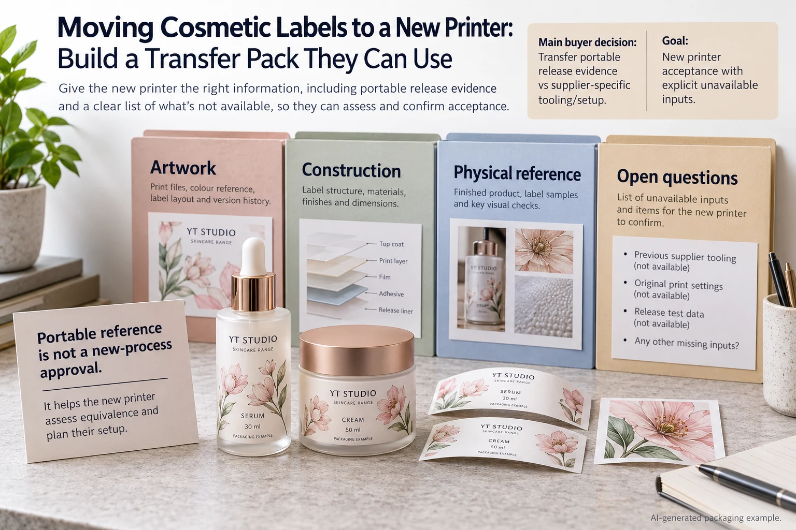

A skincare brand is moving its label printing to another supplier. The previous order number, a PDF and a jar sample arrive in the new printer's inbox. Everyone calls it a repeat. For the receiving supplier, it is a new production proposal built from references of uneven completeness.
Build a transfer pack that separates portable product requirements from the previous supplier's process-specific setup. Identify what is known, what can be shared and what the new printer must propose or qualify. An old approved sample is a valuable reference, not automatic approval of a new production route.
Define what the brand needs to preserve
Start with the product and packaging outcome: approved copy, artwork identity, label dimensions, required appearance, container and application arrangement. List the versions and quantities. State which requirements are essential and which details can be reconsidered.
Do not rely on an old supplier's internal job nickname as a specification. The new team may not know which film, adhesive, finishing sequence or roll build it described. Ask for identifiable references and retain an open question where that information is unavailable.
Also identify who is authorized to supply and approve the files. Confirm that the transfer includes the deliverables the new printer needs; this article does not determine ownership, license rights or the release of another supplier's confidential process information. Resolve such questions with the responsible parties rather than assuming everything in an old production folder is transferable.
Separate the production PDF from editable source
An approved print PDF can describe the intended visual output while editable source supports future corrections and linked assets. They have different roles. If only the PDF is available, tell the new supplier and ask what it can responsibly do with that input.
Use the linked-artwork handoff guide when native files and assets are supplied. Identify fonts, images and any special production-layer references without presuming the receiving supplier uses the same software or workflow.
Keep the final approved copy and artwork revision visible. A newly reconstructed file needs review against the accepted content and geometry; it should not inherit approval merely because it resembles a previous bottle photograph.
Create a portable reference bundle
| Bundle item | Include | Keep separate |
|---|---|---|
| Product and artwork | Version list, approved copy, exact export and available source assets | Unapproved reconstruction or incomplete draft |
| Construction | Identifiable supplied materials, print and protective finish where known | Undocumented claims that a substitute is identical |
| Physical reference | Representative labels and assembled pack, sample identity and condition | Unidentified old stock or altered samples |
| Application | Container and receiving operator's actual format requirements | The previous printer's unexplained default roll build |
| Open items | Missing input, responsible owner and required decision | Assumptions silently filled from memory |
Assemble the bundle by SKU, then ask the receiving printer to state which references it has accepted and which remain missing. Connect each missing item to the decision it prevents. That lets the buyer prioritize useful clarification instead of collecting unrelated historical documents.
Store one controlled transfer revision. If a bottle reference or copy file changes during discussions, update the bundle and obtain acknowledgment. The new supplier should not have to guess which of several attachments named final is current.

Do not assume tooling or settings travel with the artwork
A cutting tool, plate, machine setting or internal ink recipe may depend on the original production arrangement and commercial terms. Ask which identified items can be reused in the receiving process and what must be prepared again. Do not promise savings from assets the new supplier has not assessed.
The tooling reuse guide addresses that specific question. The broader transfer pack should record its answer without treating the availability of a dieline as proof that every physical tool or setup can move unchanged.
If the new supplier proposes a different construction or process, document the difference and relevant evidence. A faithful appearance target can be preserved while the route changes, but the changed route still needs its own supported release. Identical-looking material names are insufficient.
Let the new supplier issue its own production proposal
Ask for the named construction, process-related requirements, sampling scope, supply format, quantity by design and current commercial offer. Compare those with the transfer requirements, including any condition that the new proposal does not currently support.
Obtain representative evidence for appearance and application as the project needs. The previous reference can explain the target; it cannot demonstrate the new supplier's output. Keep the approval limited to the construction, pack and operation actually reviewed.
Our reorder guide controls a repeat reference. This transfer adds a different acceptance task: translating portable requirements into a receiving printer's acknowledged production proposal without pretending its setup is the previous one.
Two transfers can reasonably take different paths
A hypothetical simple design with complete files, identifiable stock and a clear physical target may support a focused proposal. The buyer can concentrate on confirming the new output and application requirements.
A complex finish with missing source assets and an unknown construction needs more clarification or reconstruction before release. That is not a reason to invent the missing specification. Stop the affected decision until the brand and receiving supplier agree a supportable replacement reference.
For custom skincare labels, send the transfer bundle, intended quantities and destination. Use the inquiry form to prepare the request, then share approved files and references by email or WhatsApp. The form does not upload attachments. Ask the new printer to acknowledge both the preserved requirements and the work still needed to produce them.